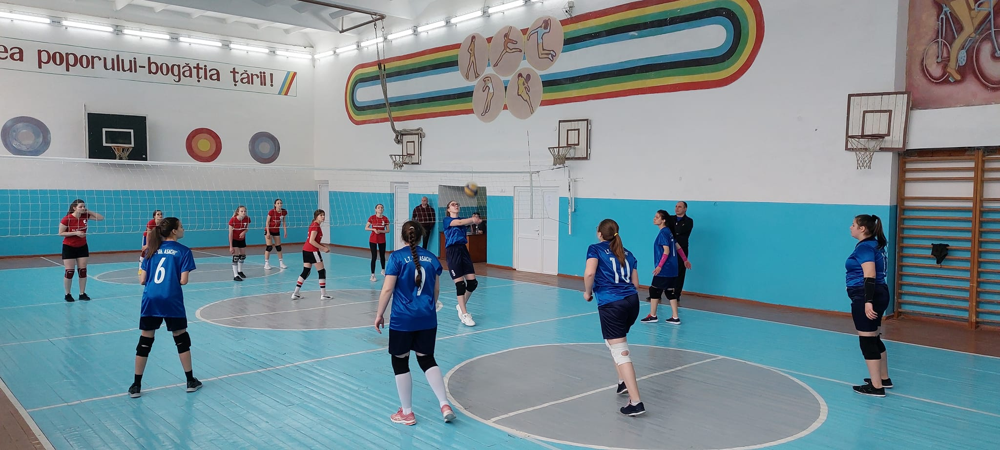
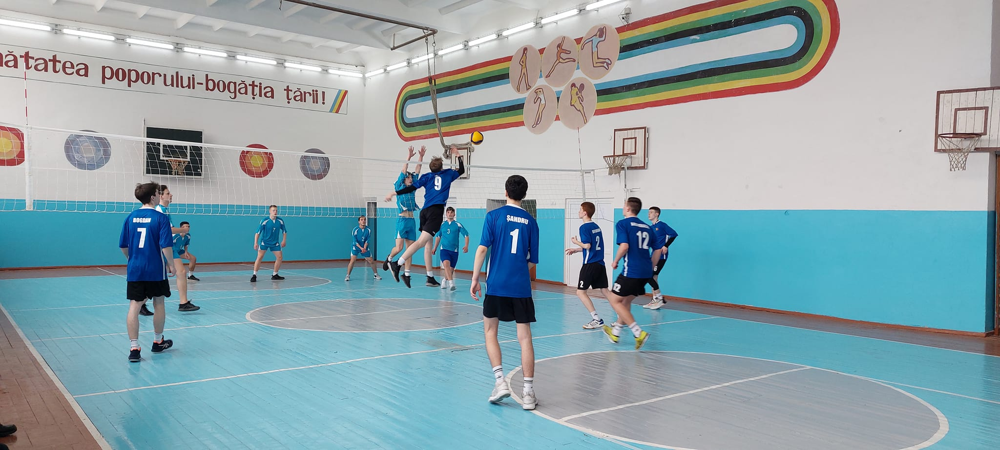

Noutăți
Seminarul metodico-practic cu genericul „Strategii pentru sporirea calității procesului educațional”
02/05/2022Seminarul metodico-practic cu genericul „Strategii pentru sporirea calității procesului educațional”, a fost organizat conform Planului managerial al Direcției Educație Ungheni, joi, 14.04.2022. La seminar au participat managerii instituțiilor școlare din raionul Ungheni și 10 manageri din raionul Hîncești, conduși de șeful adjunct al Direcției Educație, dna Buruiană Eugenia. „Calitatea nu este niciodată un accident, ci rezultatul unui efort de inteligență”, desigur, acest efort se regăsește în manifestarea unei atitudini responsabile față de rolul fiecărui subiect educațional. Participanții la seminar au asistat la ore publice realizate cu succes de doamnele profesoare: Puiu Irina, Buruiană Ecaterina, Șargu Svetlana, Scutaru Nina, Costovici Ecaterina, Ciubotă Svetlana, Istrati Marta, Spînu Maria, Lușciov Nina. De asemenea au participat la ateliere de lucru moderate de domnul Primac Gheorghe, doamnele Chercheja Lucia și Timoșco Oxana în cadrul cărora au fost abordate atât aspecte teoretice cât și metode practice de stimulare și sporire a calității procesului educațional. Școala nu este doar o clădire cu clase, este o comunitate cu suflete de copii. Puterea de a vedea școala ca o comunitate închegată stă în viziunea pe care o poate dezvolta managerul școlar, care este elementul critic de schimbare a procesului educațional . Sigur, nu poate face totul de unul singur, doar în echipă putem crea cheia stării de bine și condiții optime pentru a obține un procent bun al calității.
Informație pentru elevi
01/05/2022În perioada 12-22.04.2022 Inspectoratul de poliție Ungheni desfășoară activități privind informarea elevilor referitor la respectarea Regulilor de securitate în perioada vacanței de primăvară. Mulțumim pentru colaborare domnului Veaceslav Popovici, ofițer de sector al SP nr.1 Ungheni.
Spartachiada volei (femenin) - 2022
04/04/2022 Bravo!!! echipei de volei, femenin, treapta liceală pentru performanța obținută în cadrul spartachiadei raionale: locul I. Ați reușit să promovați societatea care prețuiește sportul și imaginea liceului. Mulțumim domnului profesor Patrașcu Dorin pentru pregătirea echipei. Felicitări!!!
Spartachiada volei (masculin) - 2022
04/04/2022 Bravo!!! echipei de volei, masculin, treapta liceală pentru performanța obținută în cadrul spartachiadei raionale: locul I. Ați reușit să promovați societatea care prețuiește sportul și imaginea liceului. Mulțumim domnului antrenor Nazari Victor pentru pregătirea echipei. Felicitări!!!
Concert de caritate
02/04/2022Un concert de caritate pentru copiii refugiați din Ucraina a fost organizat astăzi, de formația de muzică rock „Respect” din or. Ungheni. Membrii trupei sunt elevii liceelor „Gh. Asachi”, „M. Eminescu”, „V. Alecsandri”, „Al. Pușkin”. Bravo pentru inițiativă și mult succes în continuare!